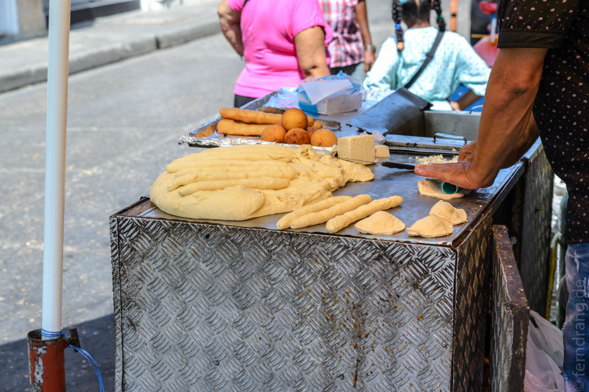
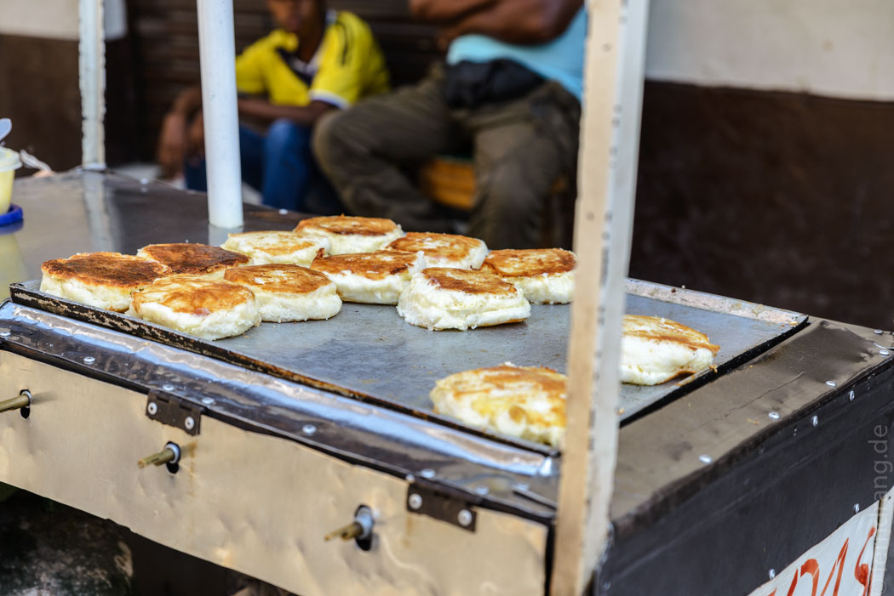

Kolumbien kennt jeder. Und jeder weiß etwas darüber zu sagen. Die, die noch nicht dort waren, erzählen von Drogen, Kriminalität, Entführungen, Escobar und der FARC. Dort darf man auf keinen Fall hinfahren. Die anderen, die schon dort waren, erzählen von furchtbar netten Menschen, Gastfreundschaft, Naturwundern und fragen, worauf man noch warte. Hin! Bei unserem Trip haben wir sozusagen das Lager gewechselt und sind jetzt auch welche, die schon dort waren.
Noch bevor es los ging, hatte Kolumbien schon einige geografische Überraschungen auf Lager. Südamerika, klar. Karibik, Pazifik, auch klar. Aber wie hängt denn Panama da dran? Die Verbindung zwischen Nord- und Südamerika geht also von West nach Ost – schon seltsam. Da gibt es noch Grenzen zu Venezuela im Osten und Ecuador im Süden. Ach und an Brasilien grenzt es natürlich auch – und an derselben Stelle (Leticia) auch an Peru? Liegt das nicht eigentlich "unter" Ecuador? Kolumbien hat im Südosten einen langen Zipfel, der nach der Mitte des Kontinents greift und das alles erklärt. Das Ganze ergibt ein ganz schön großes Viereck, dreimal so groß wie Deutschland.
In diesem Viereck verbirgt sich weit mehr als nur Karibik und etwas Kaffee. Die Anden nehmen hier ihren Anfang (oder enden sie hier?) in drei langen Fingern, die das Land durchziehen. Drum herum gibt es Wüsten und Seelandschaften, hochgelegene Täler mit mildem Klima, wilde Küsten, immer wieder Hochgebirge, die vielerorts über 5000m hoch reichen, und das riesige Gebiet östlich der Anden ist ein flacher, endloser Brokkoli-Wald, der bis zum Amazonas in den Regenwald hinunter führt. Dazwischen liegen noch einige mehr oder weniger moderne Millionenstädte. So eine Ausstattung hätte auch für einen ganzen Kontinent gereicht. Wenn man dann im Bus sitzt, kommt es einem auch so groß vor wie ein ganzer Kontinent.
Wer sich, wie wir, kaum entscheiden kann, wo man überall hin soll, kann sich leicht beraten lassen. Die Kolumbianer sind sehr hilfsbereit und kontaktfreudig. Mit gutem Spanisch wäre das sicher noch einfacher, aber viele Leute aus den größeren Städten sprechen auch englisch oder sogar deutsch (in Bonn scheint es jede Menge kolumbianische Verwandte zu geben, die jeder mal besucht hat). Dabei platzen die Menschen vor Stolz auf ihr wunderschönes Land und möchten einen überall hin schicken. So haben wir die weißen Flecken in unserer Planung schnell mit Tipps der Einheimischen aufgefüllt.
Über das Essen hatten wir sehr unterschiedliche Meinungen gehört. Tatsächlich sind die total lokalen Spezialitäten, wie Empanadas oder Frijoles mit Reis, kein Denkmal der kulinarischen Raffinesse. Aber dennoch kann man sich in den moderneren Gegenden z.B. in Bogota oder auch im niedlichen, kleinen Villa de Leyva vor gutem Essen kaum retten. Wer hier Geld hat, gibt es gerne fürs Essen aus. Auf dem Land kann man sich damit trösten, dass es zumindest authentisch ist. Außerdem mahnen die Erinnerungen an das benachbarte Venezuela, dass der Gaumen viel schlechter davon kommen könnte.
 Wem es nicht schmeckt, der muss weiter ziehen. Das macht man in Kolumbien mit dem Bus. In den größeren Städten sind die Busse eigentlich Straßenbahnen. Die Haltestellen sind hochgelegt, haben automatische Schiebetüren, sind nur mit Ticket durchs Drehkreuz zu betreten, und die Busse haben ihre eigenen reservierten Spuren. So geht es schnell voran. Die Busbahnhöfe funktionieren gut und schnell, sodass man schon im Bus sitzt, bevor man überhaupt nach dem Weg gefragt hat. Im Bus sitzen heißt aber nicht unbedingt, dass man einen Sitz hat. Wir hatten auch mehrfach Kissen auf dem Boden oder umgedrehte Eimer. Wie schnell es dann voran geht, hängt ganz von der Straße ab. In einem so großen Land können Tage vergehen, bevor man irgendwo ankommt.
Und weil hinter jeder Ecke eine interessante Landschaft liegt, kann man eigentlich nicht anders, als bald zurückzukehren.